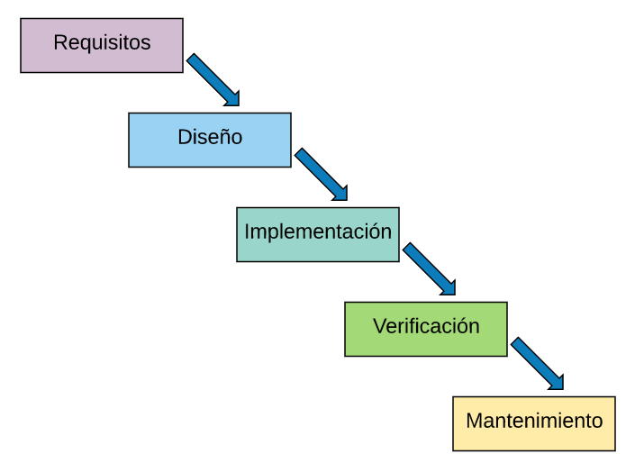

Modelos de desarrollo de software
Modelo de cascada
Es un modelo el cual se desarrolla de forma secuencial y esta constituido por unas etapas que se ejecutan una tras otra. Su nombre se denomina asi ya que como sus fases van una sobre otra entonces se hace parecer a una cascada y siguiendo una ejecucion de arriba a abajo como una cascada asi mismo el modelo es un poco riguroso en su desarrollo ya que si no se ha culminado la etapa anterior, no permite poder continuar con la siguiente etapa, asi mismo tambien se le conoce al modelo de cascada como lineal secuencial.

Modelo de espiral
Este software a diferencia del modelo en cascada, puede ser una solución para este modelo ya que, este modelo describe de alguna manera el ciclo del vida del software por medo de espirales que se van repitiendo hasta llegar al producto final, eso quiere decir que cada que se hace una iteración al modelo el software quedara un poco mas completo y saldra una nueva versión. Este modelo se conoce como modelo incremental. Este modelo minimiza los riesgos del software lo que significaria un aumento en los costes totales, mas esfuerxo y un azamientos mas lento. Las iteraciones contrarrestan lo anterior mencionado ya que primero se hacen protoripos y estos deben pasar al menos una vez por las fases del desarrollo de software.